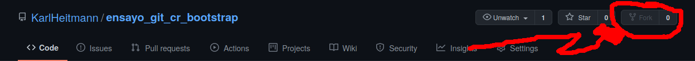
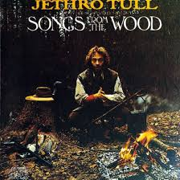
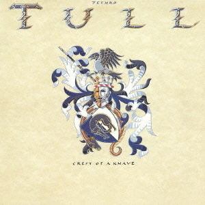
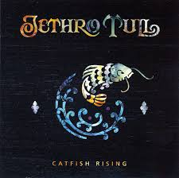
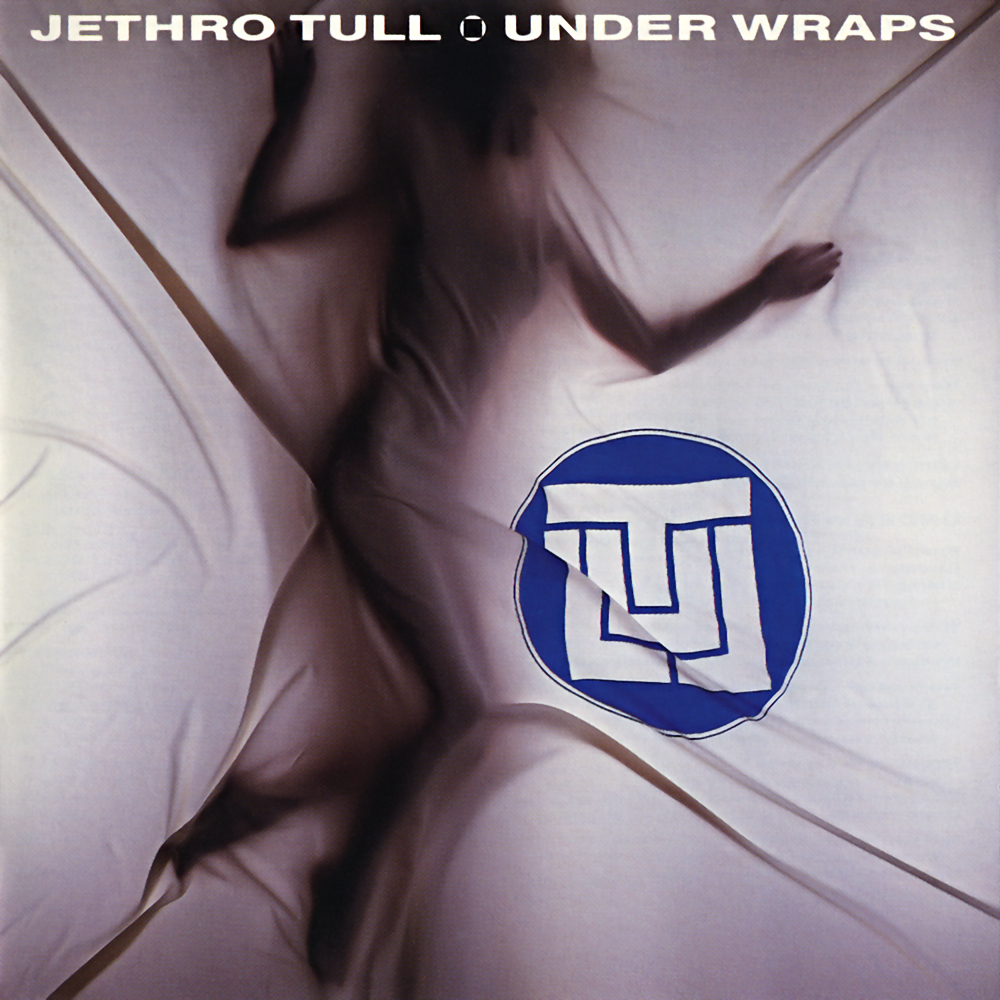
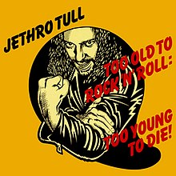
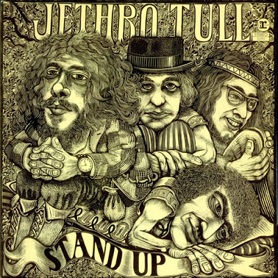
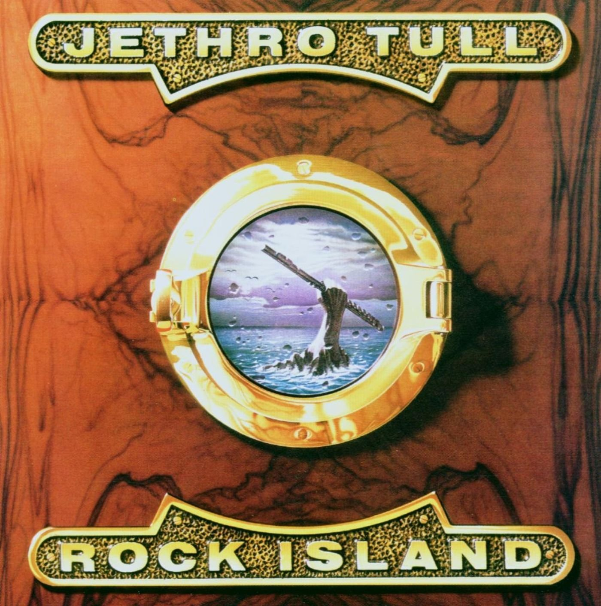
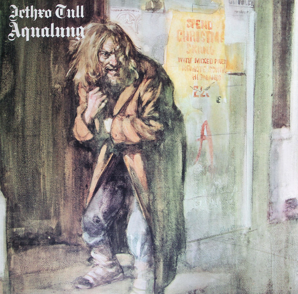
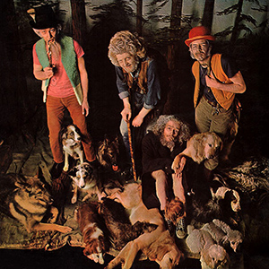

Discografía
Tarea
- Haga un FORK de este proyecto.
- Copie el archivo main.rb, y peguelo con su nombre y extensión .rb. En el ejemplo, yo ya lo copié y le puse nombre karl.rb
- Abra el nuevo archivo con su nombre, y en la línea #32, ponga su nombre. ATENCIÓN: copie su nombre TAL CUAL aparece en el listado anterior que va de la línea #4 a la #28
- Corra este nuevo programa desde su terminal, usando la instrucción
ruby su_nombre.rb, en el comando anterior, cambie "su_nombre" por el nuevo nombre que lleva el archivo - Fíjese en el nombre del disco que apareció
- Haga un commit
- Haga una card más abajo, de la misma forma que yo hice la mía con el disco que me tocó
- Utilizando el archivo template.html, copielo y péguelo, cambiándole el nombre por el del disco que le tocó. El nuevo archivo debe estar en la misma carpeta del index.html
- Copie la card que está más abajo y repítala, rellenándola con los datos del album que le tocó: nombre,imagen y año, puede buscar una imagen por internet. Ojo si la imagen tiene un copyright, debe poner lo que le piden ahí. Si no encuentra la imagen del disco, ponga la imagen que quiera. El objetivo de este ejercicio es el uso práctico de git.
- Linkee, dentro de la etiqueta <a> la card con la nueva página que hizo en el punto antes-anterior.
- Comprobando que el link a la nueva página funciona, métase a la nueva página, y complete lo que está en el template.
- Haga un commit.
-
Suba el commit utilizando
git push - Vaya a su página de github, y a la copia de este repositorio
- Discusión: ¿Qué ha sucedido? Qué es el "Pull Request"? De los demás estudiantes, ¿Alguien subió esto antes que usted? Cómo se puede juntar todo?




Heavy Horses (1978)
Heavy Horses (1978)





